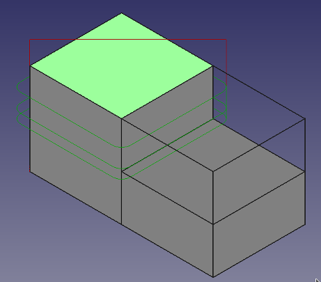

Path Profile Face
|
| Menu location
|
| Path → Face Profile
|
| Workbenches
|
| Path
|
| Default shortcut
|
| None
|
| See also
|
|
|
|
Description
The Path ProfileFace tool creates a simple contour path from one ore more selected faces of an object. A Start point can be enabled from the Operation editor, using a location defined in the Property view->Start Points.
The Path ProfileFace object is made to be part of a Path Job.

Usage
- Select the surface or surfaces you want to mill out
- Press the Face Profile button
- Adjust the desired properties
! Path ProfifileFace don't take care of other details of the object. You have to adjust the properties, especially the final depht, carefully, a mistake will destroy your workpeace
Properties
Base Geometry
- Add, if not allready done, the elements which should be the base for the path
- you can also delete or change to other elements
Depth
- DATAStart Depth: Starting Depth of Tool- starting depth in Z
- DATAFinal Depth: Final Depth of Tool- lowest cutting level in Z
- DATAStep Down: Step Down of Tool- the amount of material which will be removed at once
Height
- DATASafe Height: The hight above the workpeace where rapid motions are allowed.
- DATAClearance Height: The height needed to clear clamps and obstructions
Operation
- DATATool Controller: Defines the Tool controller used in the Operation
- DATACut Side: Defines on which side the cut should be done
- DATADirection: Specifies a CW or CCW move for the cut
- DATAExtra Offset: Addet to the tool diameter to leave some material for a finish path
- DATAUse Start Point: Set the start point of the path manualy (not implemented jet)
- DATAUse Compensation: Creates a path with offset of the tool radius to respect the parts dimensions
{kind=link}
{kind=link}
{kind=link}